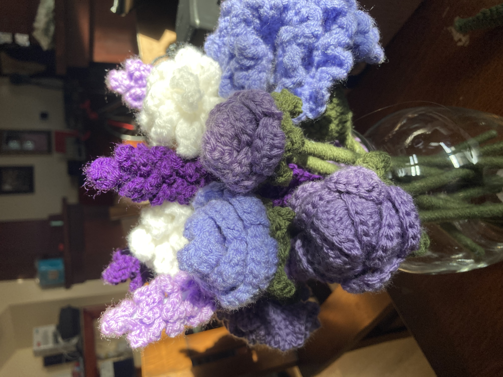
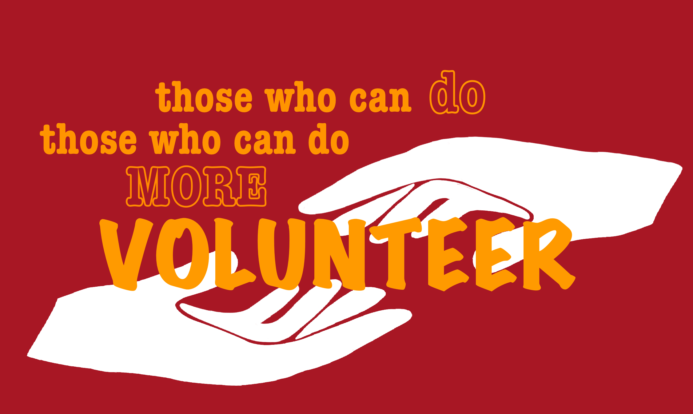
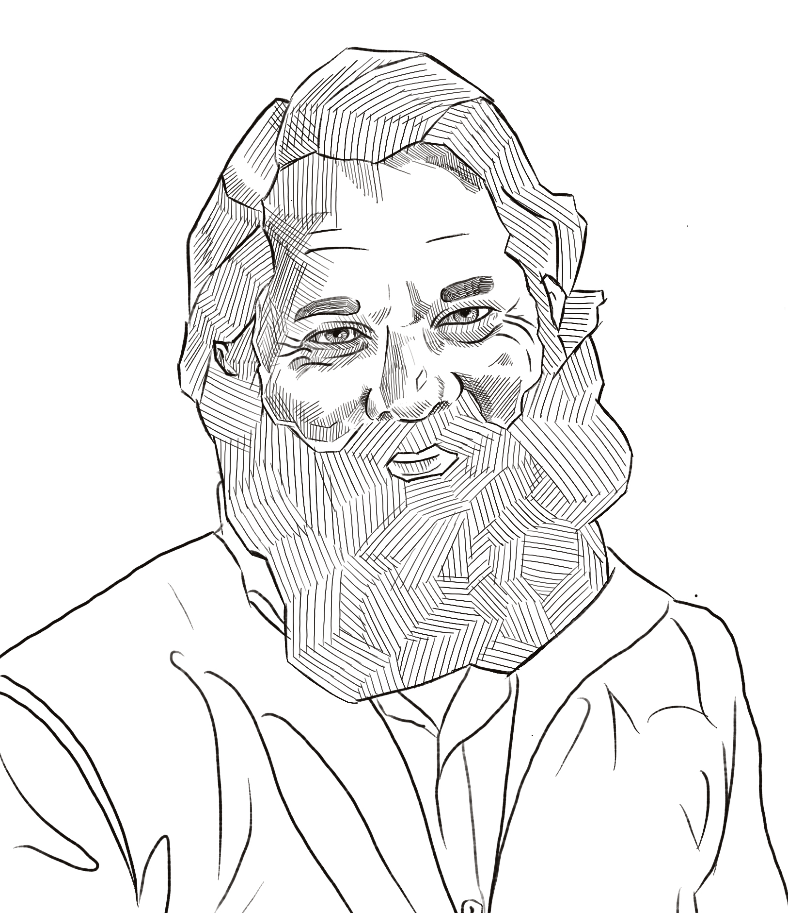

Charlize Francia
I am a 19 year old girl hoping to spend the rest of her life making art for people to enjoy. Ever since I was young I have always been drawn to expressing my creative side, whether it was drawing, creative writing, learning different instruments, and my current passion of crocheting. For me, the arts and crafts portion of life did not stop in kindergarten much like my peers; I have even developed my ability to crochet into a small business, selling my finished products to friends, families, and family friends. Some of my favorite crochet projects to date include a flower bouquet I gifted to my cousin as a housewarming gift and different dinosaur chicken nuggets that I used to inhale as a younger kid, sometimes even now.
In my senior year of high school, I had the privilege of being a part of the yearbook committee, another way to express my creativity. I tried my hands as a photographer and a graphic designer. Although I was an amateur photographer, with a lot of other people in the committee having taken years worth of pictures compared to my hundreds, I felt compelled to take the best photos. Designing the yearbook pages was one of the most fun projects I had ever worked on. Seeing my hard work and my vision realized in the school yearbook was endlessly fulfilling for me because it felt like a validation of my efforts to nurture what others might not think is profitable or useful.
My attention to detail and love of building items with my hands proved incredibly valuable when I began working as an administrative assistant at my mother’s business. One of my most important tasks involved organizing dozens of binders filled with various pages, tabs, and professional forms that would be inspected by an auditor. I even had to fix a handful of completed binders that a previous worker had put together incorrectly. This work that many people would find tedious was something that I was able to wholeheartedly enjoy, seeing each binder come together perfectly at my hand was incredibly satisfying. I definitely plan on continuing to work while building off my creativity, and I have even found similar enjoyment in the attentiveness and critical thinking that coding requires.
Originally, I used to think that I had to get a job involved in STEM since I have two older brothers that work in that field, but I realized that my creativity sets me apart and that I should take pride in what I do best. There are a lot of different ways my artistic sense can benefit a business, local organization, school, etc. and I should always focus on fostering my talents rather than focusing on other things that do not make me as happy.
Experience
Administrative Assistant
• Update patient and employee files
• Graphic design as needded
• Create patient applications
Assistant
• MAke scent6ed candles by hand
• Arrange flowers
• Design and create apparel
• Created centerpieces, bouquets, decorations, and goodie bags for weddings
Crochet Commissioner
• Flower bouquets
• Blankets and throw pillows
• Apparell
• Stuffed animals
• Household items such as coasters and dish rags
Education
UC Riverside
Portfolio


